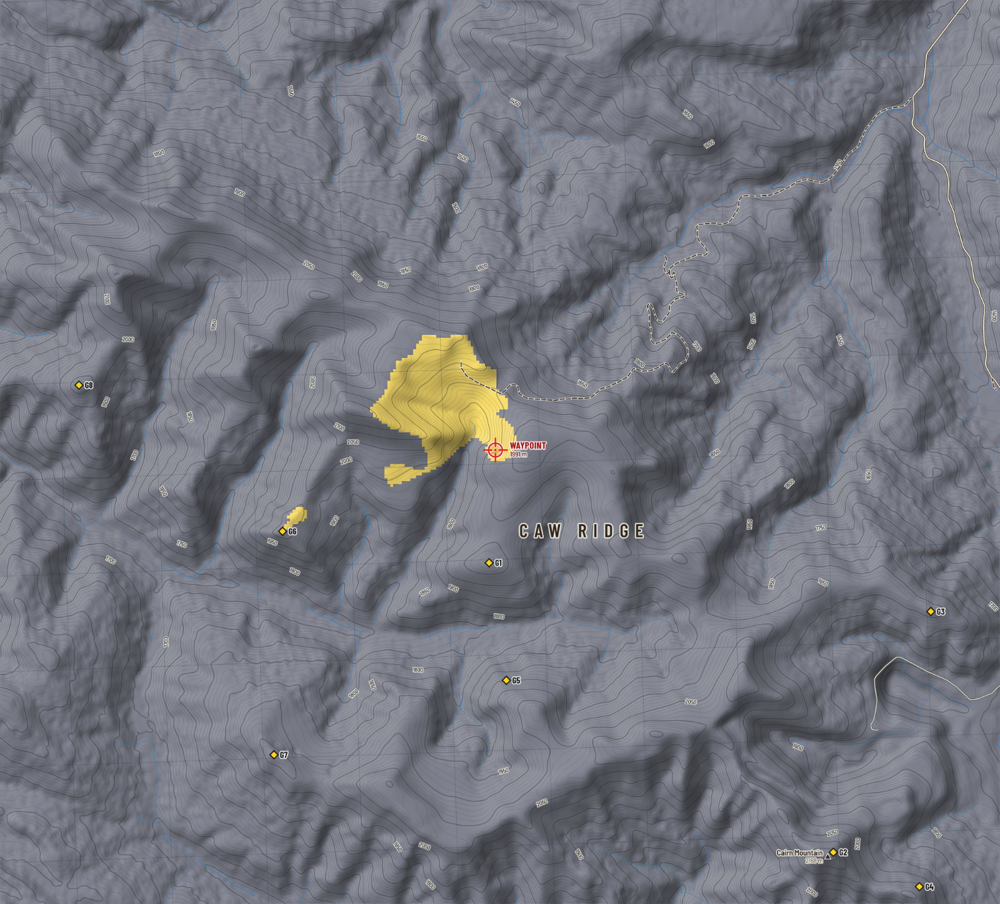
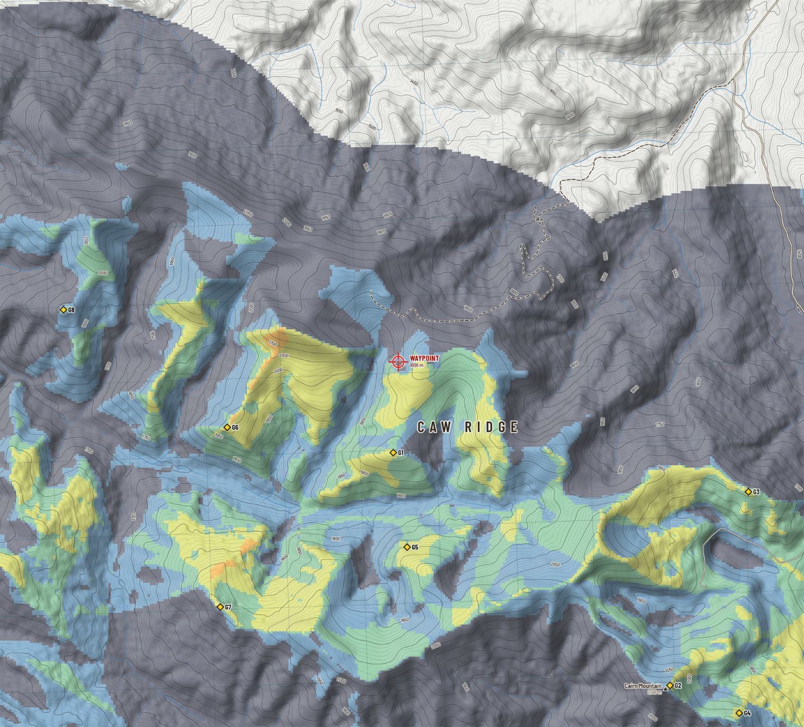
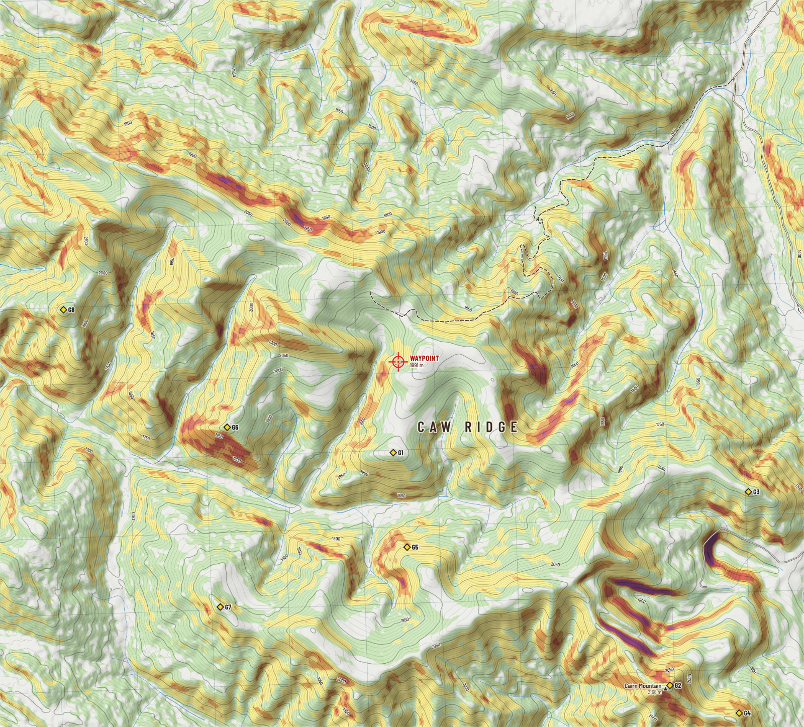
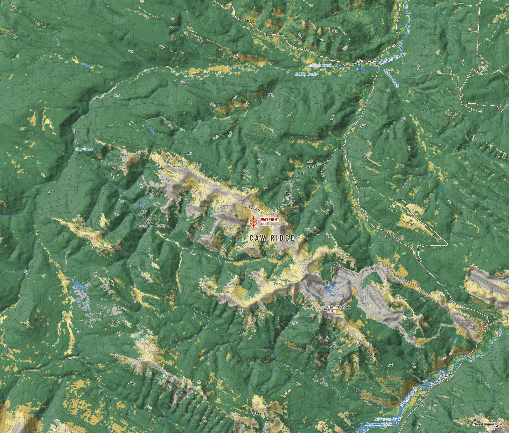
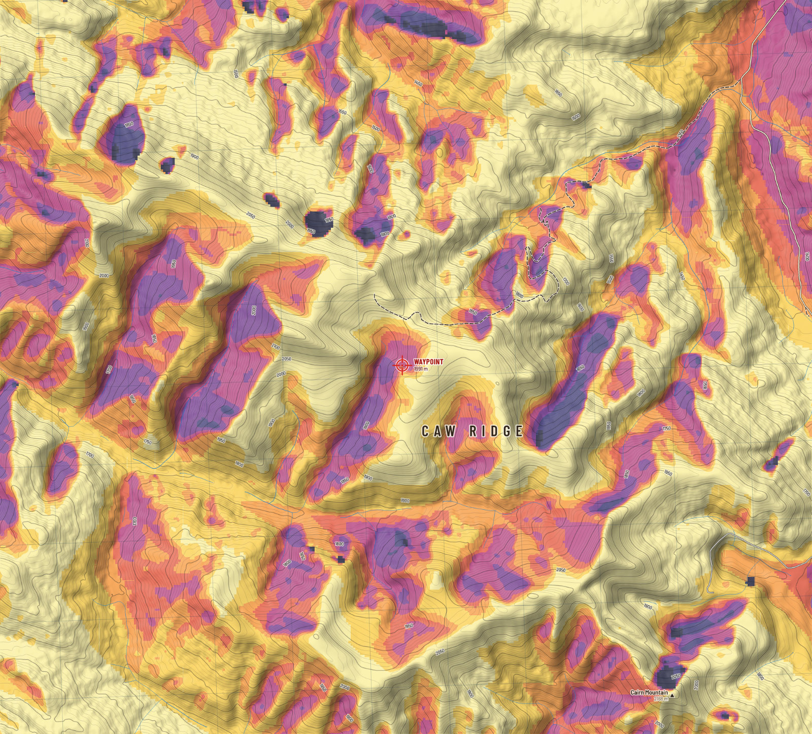
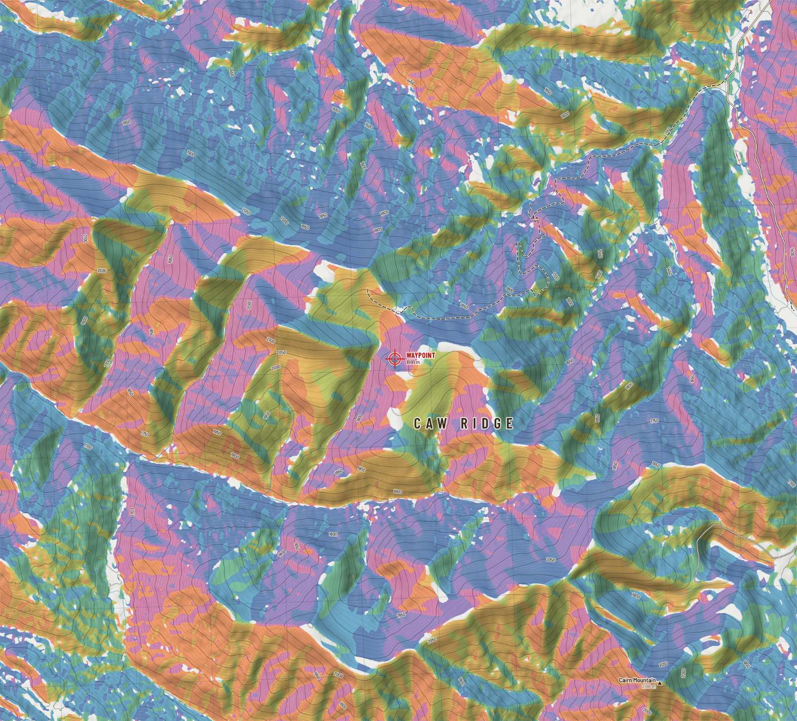
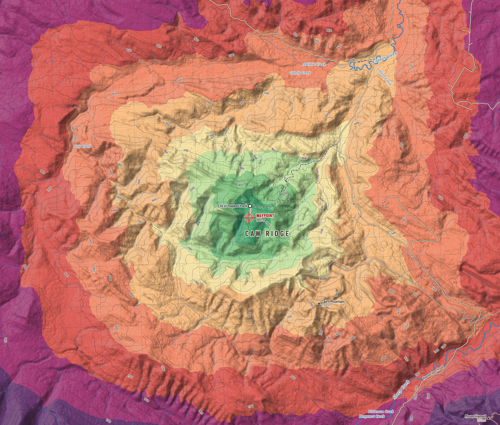

Terrain
Reading the ridge
The elevation model is more than a picture. Run sight lines across it and it tells you where to sit; run the sun across it and it tells you which slope warms first; run a walker across it and it tells you how far a pack-out will be.
- Within 3 km of the waypoint
- 1475 to 2219 mLowest and highest ground.
- Open ground
- 51%Shrub, tundra, grass and rock. The rest is timber.
- Forest gives out at
- About 1940 m95 percent of forest cells lie below this height.
- Steeper than 30°
- 7%Of the ground within 3 km, by the 30 m model.
The waypoint is in a bowl
Your waypoint lies at 1,991 m on ground that faces north-west and falls away at about 19°. Higher ground stands close by: 2,145 m at 990 m to the west, and more of it beyond. The sight lines say that a hunter standing at the waypoint sees 1.4 km², which is 0.7 percent of the ground within 8 km. It is a sheltered place, out of the worst of the wind and off the skyline. It is a poor place to glass from.

Where to glass from
The program tried a candidate every 180 m across the close sheet, let each one shuffle to the highest ground nearby, and counted the open ground it could see between 300 m and 3 km with an eye 1.7 m up and an animal's back 1.0 m up. Timber was left out of the count: you cannot glass into it. The eight best, kept at least 700 m apart:
| Point | Open ground in view | Share of open ground | Height | From waypoint | Bearing | Latitude, longitude | UTM 11U |
|---|---|---|---|---|---|---|---|
| G1 | 6.8 km² | 40% | 2,026 m | 1.2 km | 183° S | 54.05210, -119.39174 | 343433 E 5991964 N |
| G2 | 6.4 km² | 45% | 2,160 m | 5.5 km | 140° SE | 54.02487, -119.33666 | 346937 E 5988815 N |
| G3 | 5.5 km² | 44% | 1,918 m | 4.9 km | 110° ESE | 54.04752, -119.32106 | 348042 E 5991301 N |
| G4 | 4.9 km² | 36% | 2,008 m | 6.4 km | 136° SE | 54.02163, -119.32290 | 347827 E 5988425 N |
| G5 | 4.6 km² | 29% | 1,950 m | 2.4 km | 177° S | 54.04105, -119.38899 | 343571 E 5990729 N |
| G6 | 4.5 km² | 35% | 2,017 m | 2.4 km | 249° WSW | 54.05506, -119.42478 | 341281 E 5992368 N |
| G7 | 3.0 km² | 43% | 2,021 m | 3.9 km | 216° SW | 54.03404, -119.42616 | 341111 E 5990032 N |
| G8 | 2.8 km² | 29% | 2,020 m | 4.4 km | 279° W | 54.06881, -119.45737 | 339202 E 5993970 N |
Open ground in view
Square kilometres of open ground seen between 300 m and 3 km, by glassing point
How to use this
G1 is 1.2 km from the waypoint at 183° true (168° on the compass), on a 2,026 m top. Bearings are true; subtract 16° for a magnetic compass. Sight lines are over bare ground: a single krummholz clump can take a view away, and the model cannot see a bench under a small cliff. Walk the last hundred metres with your eyes.
The dark ground on the glassing map matters as much as the bright. It is dead ground that no point sees into: where animals bed out of sight, and where you can move without being seen.

Steepness
Slope within 3 km
Share of ground by slope angle
Caw Ridge is rolling country with short cliffs and rockslides, not a wall. Most of the ground within 3 km is between 10 and 30 degrees: steady to steep walking. Less than a tenth is over 30 degrees, and almost none reads over 40.
That last number deserves suspicion. A 30 m cell averages a 15 m cliff into a moderate slope. The goats know where the cliffs are; the model only knows where they are likely. Read every colour on the slope map as a minimum.

Ground cover
Cover within 3 km
Share of ground by cover class, 2020 Land Cover of Canada
About half the ground within 3 km of the waypoint is conifer forest; the other half is open. Timber climbs to roughly 1940 m, thins to shrub and krummholz, and gives way to tundra, grass and rock on the ridge tops.
The edge between timber and open ground is the line to watch at first and last light. On the cover map it is the boundary between dark green and everything else.

Sun and thermals
On 5 Oct the sun rises at 8:07 and sets at 19:23 on a level horizon. At the waypoint, with the surrounding ridges counted, direct sun arrives about 10:08 and is gone about 19:08: 9.2 hours of it.
The pattern that follows is old knowledge. Slopes that take the first sun warm first, and air begins to rise on them; shaded slopes keep draining cold air downhill until the sun finds them. In the evening the order reverses. Plan an approach so that the air carries your scent away from where you expect animals to be, and remember that ridge top wind will often overrule the thermals altogether.


Walking
Walking times come from Tobler's hiking function, a rule of thumb fitted to real walkers: about 5 km/h on the level, fastest on a gentle downhill, and slower the steeper it gets in either direction. On roads and tracks the full speed is used; off them, three fifths of it, which is Tobler's own figure for open ground without a path.
From the end of the mapped track to the waypoint is 0.6 km and about 12 minutes; coming back, about 13 minutes. The model knows nothing of a loaded pack, snow, deadfall, willow, or a creek in flood. Add half again for a real day, and double it with a quarter on your back.
